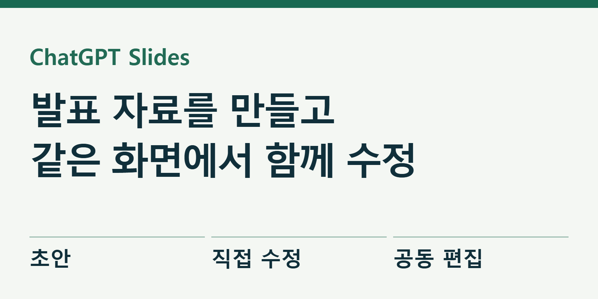
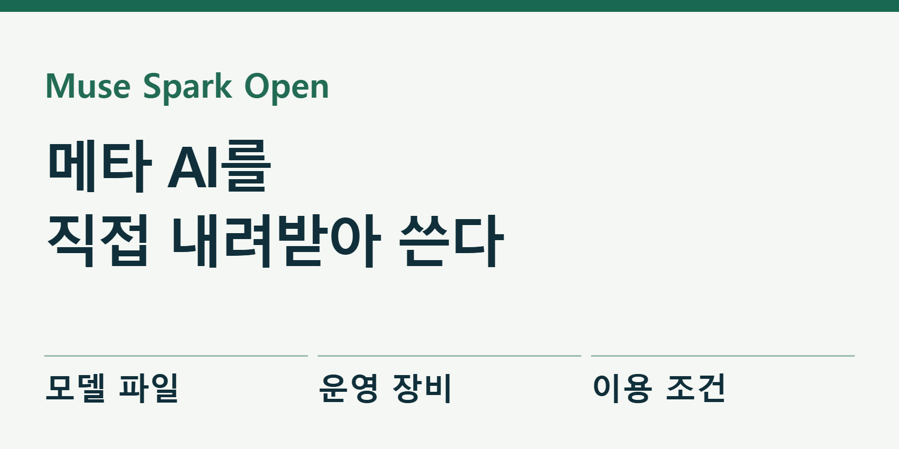
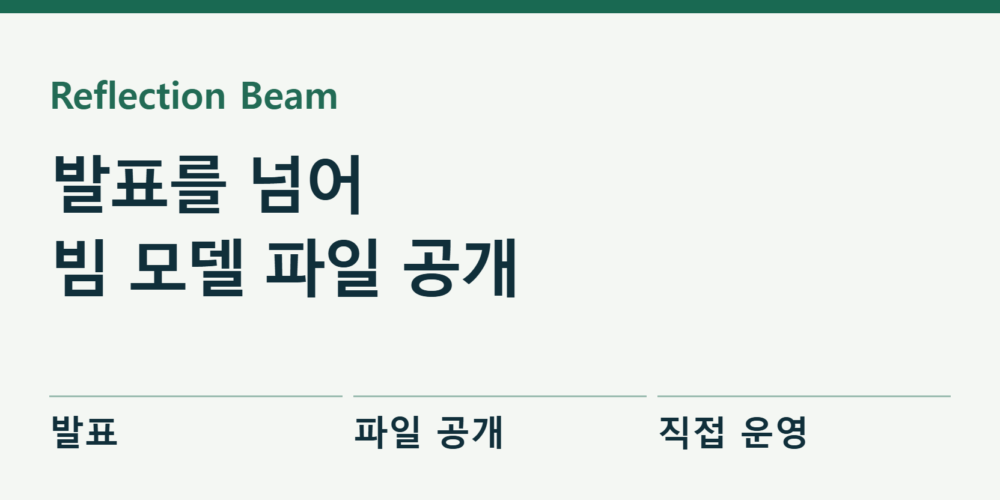
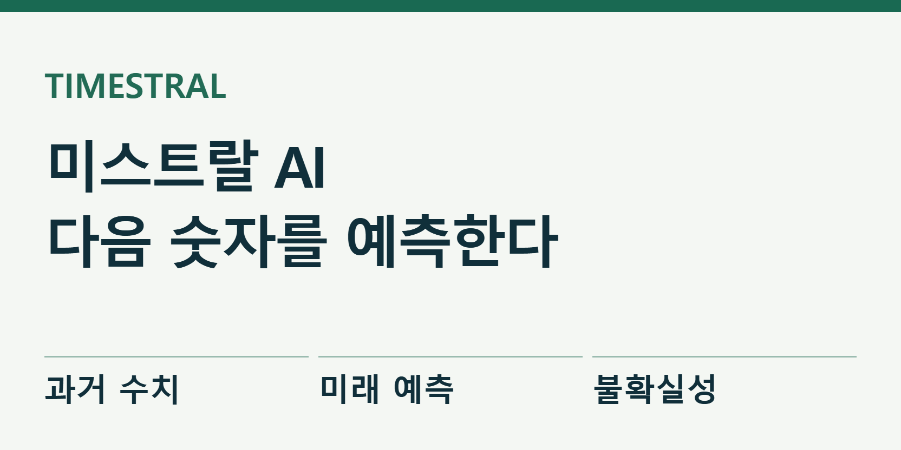
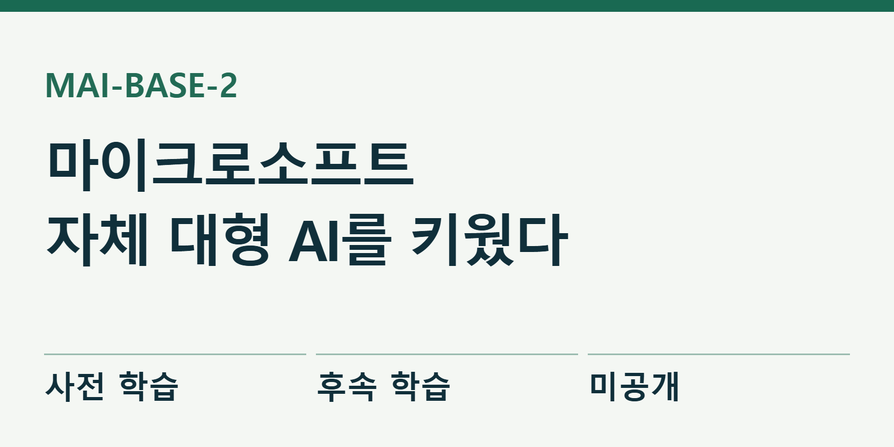
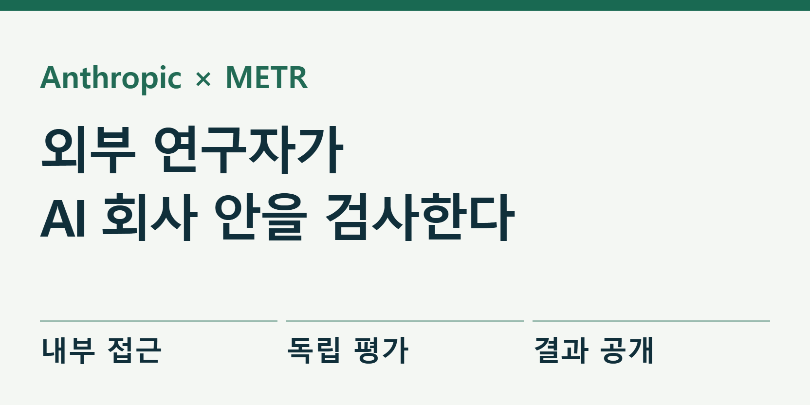
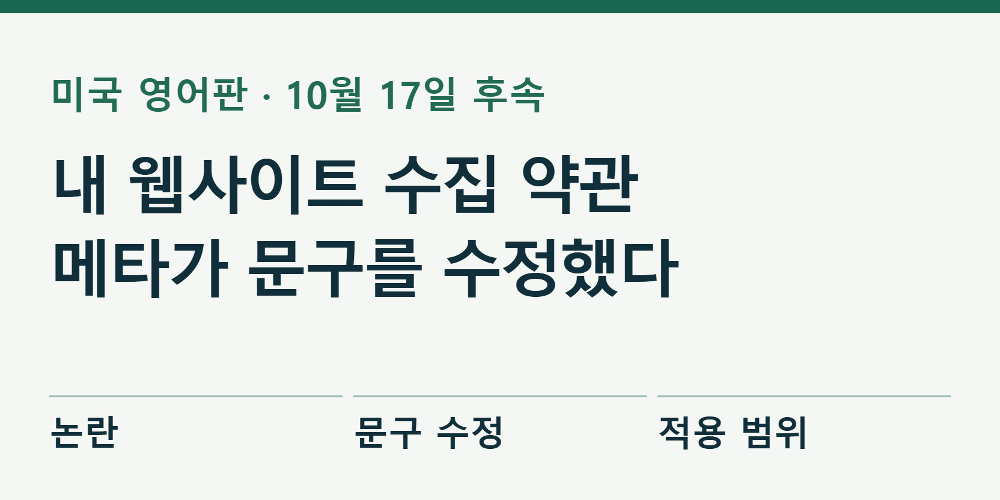
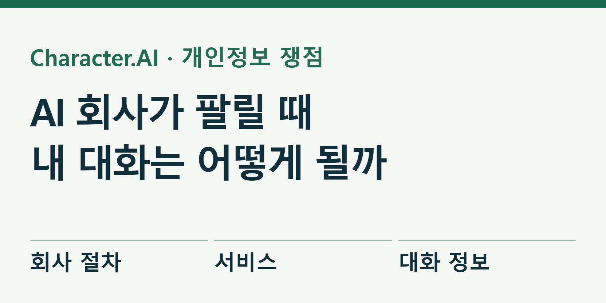

심층 기획
REA, AI가 프로그램 속을 읽는 방법
실행 파일에서 기능을 찾아 다시 만드는 REA. DX-Ball의 소리 계산과 Notion의 복사 동작, 검사를 통과한 오류까지 공개 기록으로 확인했다. 앱 전체 복제와 기능 재구현은 다르다.
2026.10.18 · 원문 확인과 실제 자료
기능 소개부터 공개 모델, 음성, AI 평가와 개인정보까지. 공식 발표와 독립 평가, 직접 실행 여부를 나누어 읽습니다.
제미나이 4 아르곤 특집 보강: 로봇·제작 도구·API 가격 →
심층 기획
실행 파일에서 기능을 찾아 다시 만드는 REA. DX-Ball의 소리 계산과 Notion의 복사 동작, 검사를 통과한 오류까지 공개 기록으로 확인했다. 앱 전체 복제와 기능 재구현은 다르다.

AI 업무
ChatGPT Slides는 초안을 만든 뒤 글·그림·도표를 직접 고치고 동료와 함께 편집하는 기능이다. 파일 생성과 공동 편집의 차이, 시작 방법과 공유 조건을 살폈다.

AI 음성
Grok Voice 3.0은 글을 읽는 음성이 아니라 듣고 답하며 도구를 쓰는 대화형 AI다. 응답 속도와 독립 평가, 실제 상담에 붙일 때 필요한 비용·확인 절차를 살폈다.

공개 AI 모델
Muse Spark Open은 글·그림·음성·영상을 읽고 코딩과 여러 단계의 작업을 수행한다. 실제 공개 범위, 고성능 장비 조건, 회사가 보여 준 편집 시연을 함께 살폈다.

코딩 AI
Reflection이 Beam의 실제 모델 파일과 개발 도구를 공개했다. 출시 예고 뒤 달라진 점, Mirror의 승인 방식, 대형 모델을 운영하는 비용과 장비 조건을 살폈다.

업무 AI
Nemotron 3.5 Super VL과 Bolt가 문서 이해와 직접 운영을 겨냥해 나왔다. 같은 모델처럼 보이는 두 제품의 차이와 24GB 조건, 회사 성능표의 범위를 짚었다.

이미지 AI
FLUX 3 Image Klein이 공개됐다. 참고 이미지와 위치 지정 편집, 내 컴퓨터 실행 조건, 상업 이용 라이선스를 나눠 살펴본다.

업무 AI
매출·재고·설비처럼 시간에 따라 쌓이는 숫자를 예측하는 Timestral. 확률 범위와 실무 검증 방법, 모델 이용 조건까지 확인했다.


AI·지도
Google Earth AI가 지도·위성·기상 자료를 골라 지역 문제를 분석하는 시험 서비스를 확대했다. 실제 시연, 평가 결과, 한국 이용 조건을 나눠 살폈다.

AI·안전
METR 연구자 6명이 앤트로픽의 내부 도구와 자료를 살피기 시작했다. 평가 결과를 공개할 권리와 여전히 남은 정보 제한을 함께 읽었다.

AI·정책
사업자 웹사이트 수집을 둘러싼 논란 뒤 메타가 새 약관의 미국 영어 문구를 수정했다. 기존 조항, 회사 설명, 남은 쟁점과 한국어판 확인 범위를 나눠 정리했다.

AI·개인정보
Character.AI가 법원 감독 아래 매각을 추진하자 미국 법무장관들이 아동 안전과 대화 기록 보호를 요구했다. 회사의 현재 안내와 데이터 내보내기 절차도 확인했다.

AI 기획
Fish Audio Drama 3의 공식 시연과 문서에서 감정 지시 방법을 살폈다. 한국어 뉴스·설명·대사를 공정하게 비교하는 방법과 실제 비용·상업 이용 조건까지 정리했다.